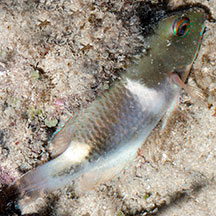
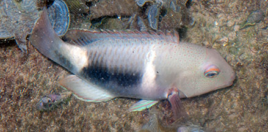
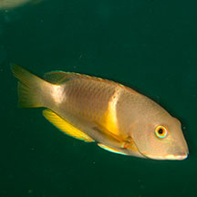
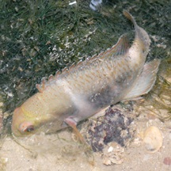
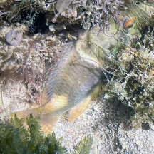
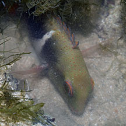
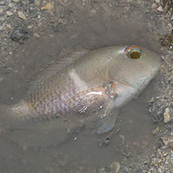
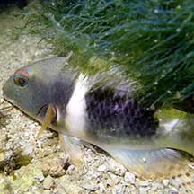

|
|
| fishes text index | photo index |
| Phylum Chordata > Subphylum Vertebrate > fishes > Family Labridae |
| Anchor
tuskfish Choerodon anchorago Family Labridae updated Sep 2020 Where seen? This large fish is sometimes seen on our reefy Southern shores. Sadly, sometimes dead in abandoned fishing nets, or trapped in large fish traps ('bubu'). Elsewhere, they are usually seen in silty reefs, also in seagrass areas with sand. Small juveniles are seen in seagrass beds near mangroves and freshwater run off. Sometimes seen in groups. It is also called the Yellow-cheek tuskfish, White-belly tuskfish or Orange-dotted tuskfish. Features: To 38cm, those seen 20-30cm. With variable coloration, it is identified by a pale diagonal bar at the pectoral fin, black area on the middle of the upper side and large white saddle behind the dorsal fin. It also has a white chin and belly, and the head has tiny orange spots. Like other wrasses, the fish may have different colours and patterns at night. Juveniles may be greenish when in seagrass. It has a pair of enlarged canine teeth in front of the jaws. |
 Kusu Island, Jul 11 |
 Tanah Merah, Apr 11 |
| What does it eat? It fees mainly
on hard-shelled prey including crustaceans, molluscs and sea urchins. Human uses: It is sold fresh and as live seafood in Hong Kong. It is also harvested for the aquarium trade. |
| Anchor tuskfishes on Singapore shores |
On wildsingapore
flickr
|
| Other sightings on Singapore shores |
 Marina Keppel Bay, Apr 11 Photo shared by Marcus Ng on flickr. |
 Sentosa Serapong, May 12 Photo shared by Heng Pei Yan on her blog. |
 Cyrene, Apr 24 Photo shared by Kelvin Yong on facebook. |
 Cyrene, Apr 26 Photo shared by Yan Le Su on facebook. |
 Pulau Semakau (North), Apr 16 Photo shared by Marcus Ng on facebook. |
 Pulau Salu, Apr 21 Photo shared by Jianlin Liu on facebook. |
| Acknowledgement Thanks to Jeffrey Low for identifying this fish. Links
|